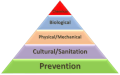
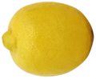
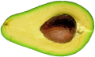
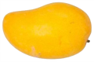

Curso
Plagas de Frutales
ENT-659


• PRESENTACIONES •
Conceptos de manejo integrado de plagas
Plagas de Importancia Economica del Aguacate
Biología y Hábitos de Stenoma catenifer
• LECTURAS MIP •

• Kogan, 1998. Integrated pest management: Historical Perspectives and Contemporary Developments.
• Altieri, 1999. Agroecología. Bases científicas para una agricultura sustentable.
• Barrera et al., 2008. Manejo integrado de plagas.
• Barrera, 2019. Holistic Pest Management.
• Parsa et al., 2014. Obstacles to integrated pest management adoption in developing countries.
• Stern, 1973. Economic Thresholds.
• Lewis et al., 1997. A total system approach to sustainable pest management.
• LECTURAS PLAGAS DE CÍTRICOS •

• Aluja, 1994. Bionomics & Mangement of Anastrepha.
• Aluja, et al., 2014. Pest management through tropical tree conservation.
• Bove, 2016. HLB, a destructive new-emerging, century-old disease of Citrus.
• Boyero, et al., 2014. Displacement of Aphytis chrysomphali by Aphytis melinus, parasitoids of the California red scale.
• Control Quimico de Diaphorina citri.
• da Graca & Korsten, 2004. Citrus HLB: Review, Present status & Future Strategies.
• Halbert & Nuñez, 2004. Distribution of the Asian citrus psyllid, Diaphorina citri kuwayama.
• Landeros, et al., 2003. Distribución espacial y fluctuación poblacional de Phyllocoptruta oleivora.
• Trujuillo, et al., 2010. Antecedentes y situación actual del HLB de los cítricos en México.
• Orduño-Cruz et al., 2015a. In vivo selection of entomopathogenic fungal isolates for control of D. citri.
• Orduño-Cruz et al., 2015b. In vitro selection of a fungal pathogen for use against Diaphorina citri.
• Pacheco-Rueda et al., 2016. Preferencia de tamaño de presa en seis especies de Chrysopidae sobre D. citri.
• Ibarra-Cortes et al., 2017. Susceptibility of D. citri (Liviidae) and Its Parasitoid Tamarixia radiata (Eulophidae) to Entomopathogenic Fungi.
• LECTURAS PLAGAS DEL AGUACATE •

• El Aguacate en Michoacan. Plagas y Enfermedades.
• Manual Operativo. Campaña Plagas Reglamentadas del Aguacatero.
• Castellanos, et al., 2012. Enemigos naturales de escamas armadas en aguacate en Michoacán.
• Bravo-Perez, et al., 2018. Species diversity of thrips (Thysanoptera) in selected avocado orchards from Mexico.
• Sistema de monitoreo de trips en aguacate.
• LECTURAS PLAGAS DE MANGO •

• Aluja, et al. 2014. Pest management through tropical tree conservation.
• Gutiérrez-Ruelas, et al. 2013. Los Programas de Moscas de la Fruta en México.
Profesor: Héctor González Hernández
hgzzhdz@colpos.mx